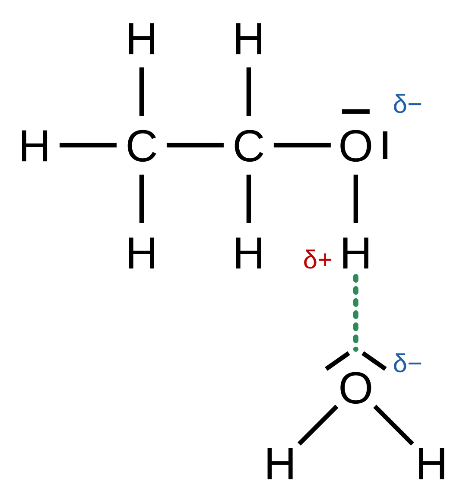
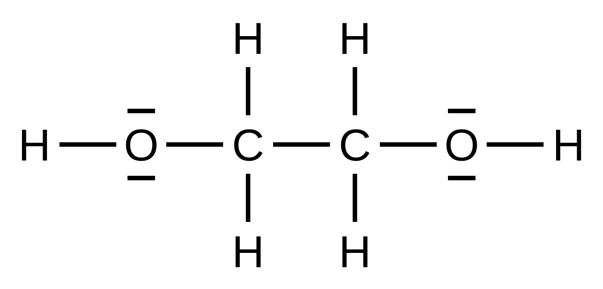

So nutzen Sie die Hilfen: Versuchen Sie es erst allein. Öffnen Sie dann Hilfe 1, danach Hilfe 2. Die Lösung dient zur Kontrolle – vergleichen Sie sie mit Ihrer eigenen Antwort und verbessern Sie diese.
Aufgabe 1: Ethanol löst sich in Wasser und Benzin
Erklären Sie mit Strukturformel und Wechselwirkungen!
Hilfe 1
Ethanol: CH₃–CH₂–O–H. Markieren Sie den hydrophilen und den hydrophoben Teil (vgl. Abb. 2).
Hilfe 2
Welcher Teil bildet Wasserstoffbrücken zu Wasser-Molekülen? Welcher Teil bildet LDW zu Alkan-Molekülen? Zeichnen Sie die Wasserstoffbrücke als gestrichelte Linie zwischen dem H-Atom der OH-Gruppe und einem freien Elektronenpaar des Wasser-O-Atoms.
Lösung (erst nach eigenem Versuch öffnen!)

Aufgabe 2: Kettenlänge und Löslichkeit
Begründen Sie!
Hilfe 1
Jeder Alkohol hat genau eine Hydroxygruppe – aber der Alkylrest wird immer länger. Wie verschiebt sich das Verhältnis hydrophil : hydrophob?
Hilfe 2
Kurzer Rest → Wasserstoffbrücken zu Wasser überwiegen. Langer Rest → LDW zu Alkanen überwiegen. Warum passt Methanol nicht zu Benzin?
Lösung (erst nach eigenem Versuch öffnen!)
Längerer Alkylrest → hydrophober Teil überwiegt → schlechtere Wasser-, bessere Benzinlöslichkeit. Methanol: Rest so klein, dass die LDW zu Benzin-Molekülen nicht ausreichen.
Aufgabe 3: Petrischalen
Geben Sie an und begründen Sie!
Hilfe 1
Methanol: sehr kurzer Rest – eher wasserähnlich. Hexan-1-ol: langer Rest – eher benzinähnlich. „Ähnliches löst sich in Ähnlichem.“
Lösung (erst nach eigenem Versuch öffnen!)
Wasser + Methanol: Mischung · Wasser + Hexan-1-ol: zwei Schichten · Benzin + Methanol: zwei Schichten · Benzin + Hexan-1-ol: Mischung
Aufgabe 4: Siedetemperaturen im Vergleich
Beschreiben und erklären Sie!
Hilfe 1
Gemeinsamkeit: Was passiert bei beiden Kurven mit steigender Kettenlänge? Unterschied 1: Welche Kurve liegt höher? Unterschied 2: Wird der Abstand größer oder kleiner?
Hilfe 2
Erklärung: LDW nehmen mit der Kettenlänge zu (beide). Alkohole bilden zusätzlich Wasserstoffbrücken – pro Molekül aber nur über eine OH-Gruppe.
Lösung (erst nach eigenem Versuch öffnen!)
Gemeinsam: Anstieg (stärkere LDW). Alkohole höher (Wasserstoffbrücken). Abstand wird kleiner (LDW der Alkylreste gewinnen an Bedeutung).
Aufgabe 5: Ethan-1,2-diol
Zeichnen und begründen Sie!
Hilfe 1
Ethan (2 C-Atome) + „1,2-diol“: an jedem C-Atom eine OH-Gruppe. Wie groß ist der hydrophile Anteil im Vergleich zum Alkylrest?
Lösung (erst nach eigenem Versuch öffnen!)

Aufgabe 6 (★ Wahl): Glycerin
Erklären Sie die Eigenschaften!
Hilfe 1
Glycerin hat drei Hydroxygruppen pro Molekül – wie viele Wasserstoffbrücken kann es bilden?
Hilfe 2
Mit welchen Teilchen aus der Luft könnte Glycerin ebenfalls Wasserstoffbrücken eingehen?
Lösung (erst nach eigenem Versuch öffnen!)
Viele Wasserstoffbrücken → hohe Siedetemperatur, zähflüssig. Wasserstoffbrücken auch zu Wasser-Molekülen der Luft → nimmt Feuchtigkeit auf (hygroskopisch), Masse steigt.
📱 Weiter üben: App „BioChemie FOS BOS Würzburg“ → Molekulare Stoffe → Zwischenmolekulare Wechselwirkungen